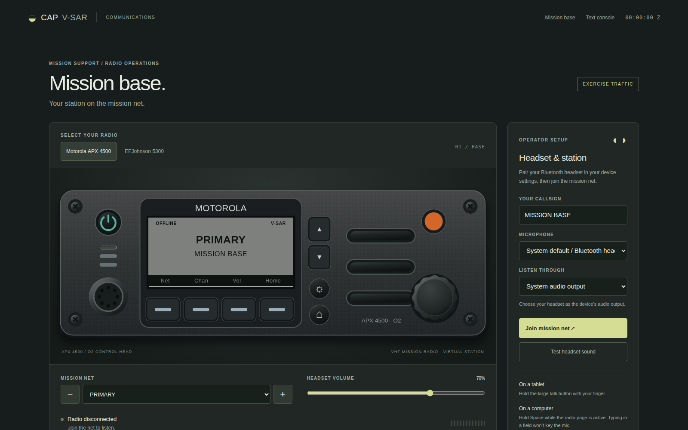

Six Integrated Stations, One Mission Net
From flight planning and dispatch to airborne homing and post-mission debrief, every team member trains on their real-world operational interface.
Cessna 182T NAV III (G1000 CAP) Airframe
Engineered specifically for Civil Air Patrol operations in X-Plane 12. Replaces generic trainers with an authentic 230 HP Lycoming IO-540-AB1A5 powerplant, 3-blade constant-speed McCauley propeller, manual cowl flaps, and automatic G1000 Manifold Pressure (MAN IN HG) EIS instrumentation.
- Authentic 3,100 lb MTOW, 87 gal fuel capacity, and C182T search loiter speeds
- Dedicated Civil Air Patrol CAP 487 livery and selection insignia
- Independent standalone package preserving default simulator aircraft untouched
Dual-Layout Mission Observer Panel
A standalone 1920×1080 panel for Air Manager and Air Player. Designed for touch screens, secondary monitors, or networked observer laptops. Supports instantaneous layout switching between the fleet standard Becker SAR-DF 517 and the modernization RHOTHETA RT-600.
- Transparent cutout for G1000 MFD popout or Air Player LAN video streaming
- Garmin GMA 1347 Audio Panel with realistic COM3 audio/MIC selection switches
- Technisonic TDFM-136B VHF-FM tactical mission radio with live dot-matrix display

MRO Base Radio & Dispatch Console
A responsive, browser-based radio console for Mission Radio Operators on tablets or laptops. Features authentic tactical faceplates for the Motorola APX 4500 O2 control head and the EFJohnson 5300, both VHF-FM, carrying live voice over the Mumble bridge.
- Acoustic simulation: Motorola 3-tone P25 chirps, AM sidetone hiss, squelch tails
- Automated CAP Form 110 radio log with UTC timestamps and plain-text export
- Dual-watch rack view allowing concurrent tactical FM and aeronautical AM monitoring

Distributed SAREX & CalTopo Integration
Simulate the entire Incident Command System (ICS) structure virtually. Whether hosted in-person at a squadron hangar, hybrid across command staff and home flight simulators, or 100% virtual across wings, CAP V-SAR unifies all stations on a live CalTopo Common Operating Picture.
- Full Incident Command Structure: Incident Commander (IC), Air Operations (AOBD), Planning, MROs, UDF ground teams, and aircrews with defined FEMA roles.
- Real-Time CalTopo Telemetry: Live flight tracks, heading vectors, and bearing Lines of Position (LOPs) stream directly onto CalTopo topographic layers.
- Monthly Training Cadence: Train search crews, radio watches, and command staff monthly with zero fuel cost, zero weather delays, and zero risk.